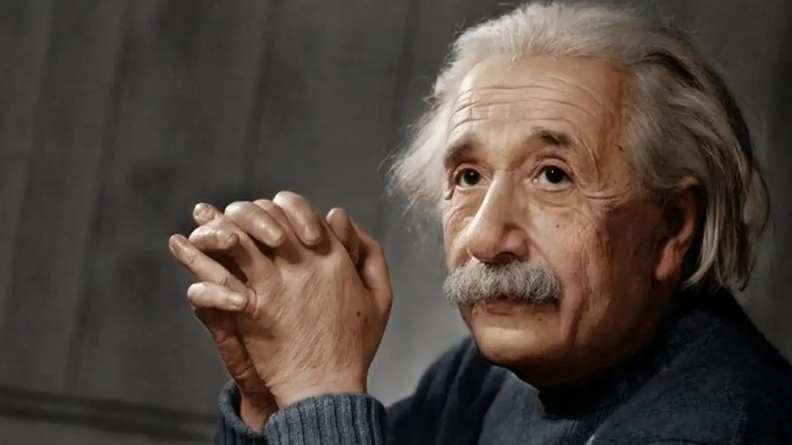

Introducción
La formula \(E=MC^2\) establece que la energía de un cuerpo en reposo (E) se puede calcular como la masa relativista aparente (m) multiplicada por la velocidad de la luz (c = aproximadamente 3 x 108 m/s) al cuadrado. Es decir, todo cuerpo en reposo con masa tiene un tipo de energía asociada (energía en reposo); similarmente cualquier cosa que tenga energía exhibe una masa correspondiente m dada por su energía E dividida por la velocidad de la luz al cuadrado \(C^2\) (de hecho, Einstein planteó la ecuación \(E=MC^2\) de esa manera, como \(L/V^2\)). Debido a que la velocidad de la luz es un número muy grande en unidades cotidianas, la fórmula implica que incluso un objeto cotidiano en reposo con una cantidad modesta de masa tiene una cantidad muy grande de energía intrínseca, por ejemplo, un protón tiene una energía en reposo que puede parecer muy poca, pero que es bastante si se toma en cuenta que toda esa energía la contiene un pequeño protón. Las transformaciones químicas, nucleares y de otra energía pueden hacer que un sistema pierda parte de su contenido energético (y por lo tanto una masa correspondiente) liberándolo por ejemplo como luz (radiante) o energía térmica; de hecho, gracias a la equivalencia masa-energía ocurren fenómenos como la fisión nuclear o la fusión nuclear (que es responsable del brillo del sol) . La equivalencia masa-energía surgió originalmente de la relatividad especial como una paradoja descrita por el matemático Henri Poincaré. La fórmula.
\(E=MC^2\)
Einstein lo presentó en su artículo «¿Depende la inercia de un cuerpo de su contenido de energía?», uno de los cuatro artículos Annus Mirabilis de Einstein publicados en la revista científica Annalen der Physik en 1905. Einstein fue el primero en proponer que la equivalencia entre masa y energía es un principio general que es real y una consecuencia de las simetrías del espacio y del tiempo. Una consecuencia de la equivalencia masa-energía es que si un cuerpo es estacionario, todavía tiene alguna energía interna o intrínseca, llamada energía de reposo, que corresponde a su masa en reposo. Cuando el cuerpo está en movimiento, su energía total es mayor que su energía de reposo, y, de manera equivalente, su masa total (también llamada masa relativista en este contexto) es mayor que su masa en reposo. Esta masa en reposo también se llama masa intrínseca o invariante porque sigue siendo la misma independientemente de este movimiento, incluso para las velocidades extremas o la gravedad considerada en la relatividad especial y general. La fórmula de energía de masa también sirve para convertir unidades de masa en unidades de energía (y viceversa), sin importar qué sistema de unidades de medida se utilice. Sin embargo la ecuación \(E=MC^2\) está incompleta, ya que solo se aplica para definir la energía en reposo, pero a la hora de definir la "energía relativista" de un cuerpo en movimiento se necesita incluir al momento lineal p (\(p=mv\), masa por velocidad); además, según la ecuación, la energía en reposo depende de la masa, por lo que no se aplica para partículas sin masa, como la luz, que debe tener energía. La ecuación que resuelve todos estos problemas es la versión completa de \(E=MC^2\), \(E^2=p^2c^2+m^2c^4\), que nos dice que la energía al cuadrado de un cuerpo es igual al momento lineal al cuadrado por la velocidad de la luz al cuadrado, más la masa al cuadrado por la velocidad de la luz a la cuarta. Para un cuerpo sin masa, la ecuación quedaría así: \(E^2=p^2c^2\)
Interpretación geométrica espacio-temporal de la ecuación
La Relatividad, esencialmente, pretende explicar el curso de los procesos naturales a través de la geometría del espacio-tiempo, la cual impone una serie de restricciones que determinan el desarrollo de tales procesos. La geometría del espacio-tiempo no es la euclídea habitual (no se cumple el teorema de Pitágoras, por decirlo así), sino que es la geometría de Minkowski, cuyas reglas son diferentes. Las magnitudes físicas interesantes en Relatividad son las que poseen cuatro componentes, porque sabemos que el espacio-tiempo relativista tiene también cuatro dimensiones (tres espaciales y una temporal) temporales de un sistema de referencia cualquiera ligado a un observador. Las tres proyecciones de este vector 4-ímpetu sobre los ejes espaciales —hablando libremente— serían lo que clásicamente (en la mecánica de Newton) llamamos las tres componentes del impulso (o momento lineal). Por otro lado, la proyección del vector 4-ímpetu sobre el eje del tiempo nos daría la masa-energía relativa (aquella que mide un observador que no está en reposo con respecto al objeto al cual asociamos ese vector 4-ímpetu). El módulo del vector 4-ímpetu (su "longitud" en el dibujo) se calcula mediante la regla que ponía en el anterior mensaje, y eso es la masa-energía propia (la que mediría un observador en reposo con respecto al objeto). Cuando ese objeto es un fotón no podemos medir directamente la masa-energía propia, solo calcularla, y resulta que siempre es cero (es una propiedad peculiar de los fotones). Pero no importa porque nosotros solo podemos manejar con sentido físico medible la masa-energía relativa y las componentes del impulso.
Cuando la ecuación se aplica a un objeto que no se encuentra en movimiento (lo cual significa que el objeto está siendo visto desde un punto de referencia en el cual el objeto se encuentra en reposo), tenemos la expresión \(E=MC^2\), en el cual \(E\) y \(m\) son la energía y masa "propias" (gráficamente igual a la longitud del 4-vector antes mencionado). Por la identidad masa-energía, haciendo la velocidad de la luz igual a la unidad, tenemos \(E=m\). Este mismo objeto podría encontrarse en movimiento desde otro marco de referencia, y para este sistema tendríamos una masa-energía relativa y además tres componentes del impulso.
En los artículos de Einstein la variable m representaba lo que ahora conocemos como masa relativista. Dicha masa se relaciona a la masa en repso que es la masa de un objeto que se encuentra fijo desde el marco de referencia siendo utilizado. La masa relativista de un objeto cambia con la velocidad de un objeto, se incrementa a medida que la velocidad de un objeto incrementa desde el punto de vista utilizado, mientras que la masa estacionaria es una cantidad fija. Las dos masas se relacionan entre sí según la ecuación.